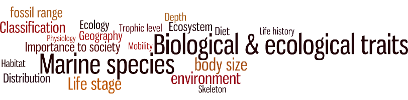

Traits data from the World Register of Marine Species (WoRMS).
The World Register of Marine Species (WoRMS) aims to provide an authoritative and comprehensive list of names of marine organisms, including information on synonymy. Next to taxonomic information, WoRMS and Aphia, its underlying SQL platform, can hold non-taxonomic information such as distributions, traits, images, etc.
Within WoRMS, basic trait information, such as environment (marine-brackish-freshwater-terrestrial), was being collected before 2014. Since then, collecting trait information has been taken one step further within the EMODnet Biology project and as a component of the LifeWatch Species Information Backbone.
Now, information on a whole range of traits is being collected within WoRMS. Three main types of traits are documented:
The traits data available within WoRMS and Aphia can be explored with the Traits Data Explorer.
Select the taxon you are interested in. You can only select one taxon at a time. If the taxon does not appear in the picklist, then it means we don’t have any traits available for that taxon. Check “Include traits from child taxa” if you want to return all children within a certain taxon.
You can select a single trait or a combination of traits for a specific taxon. If you select two (or more) traits (e.g. macrobenthos and mobile), then the explorer will look for the taxa that are either macrobenthos or mobile (“ANY of selected traits”). If you want to look for taxa that have both traits, then check “ALL of selected traits”. You can also restrict your search to a specific life stage (e.g. adult, larvae).
You can combine the selected traits with standardized distributions based on distributions from literature in WoRMS and occurrences in OBIS. This way you can create a list of species which occur in a certain area and which have a certain trait (e.g. all meiobenthos Nematoda species in the North Sea). The explorer is not able to give a list of all species within a certain area. Always use the standardized distributions filter in combination with the traits filter.
Every parameter is shown in a separate column in the data table. Select “Add classification” if you want to include the higher taxonomic classification to your results. “Compact traits in one row” is unchecked by default. If you check this box, the sourceID column is dropped and same values in one column are taken together where possible. Checking this box slows down the querying process however.
Marine Species Traits editorial board (2023). Marine Species Traits. Accessed at http://www.marinespecies.org/traits on yyyy-mm-dd. https://doi.org/10.14284/580
Availability: CC-BY